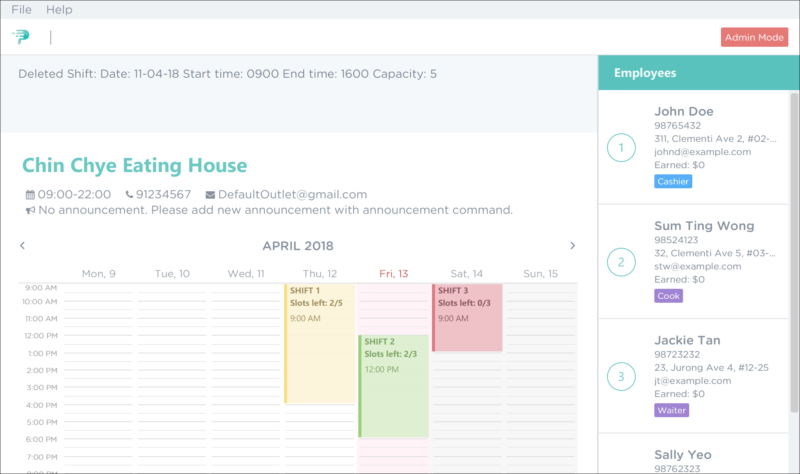
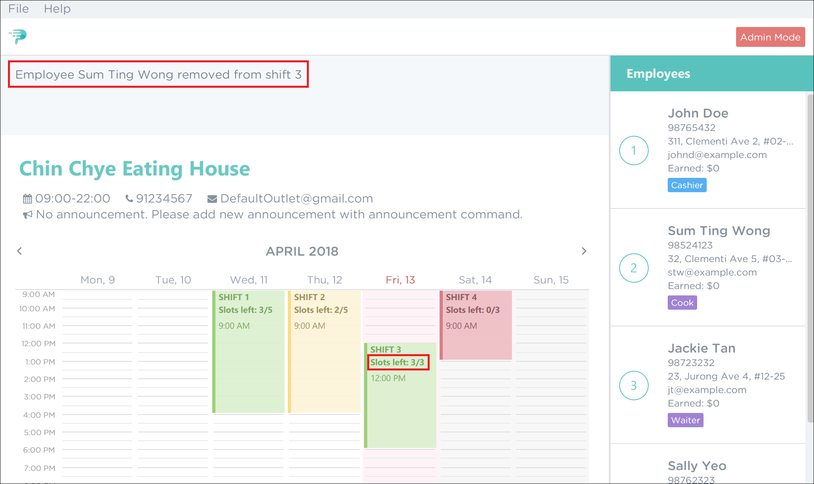
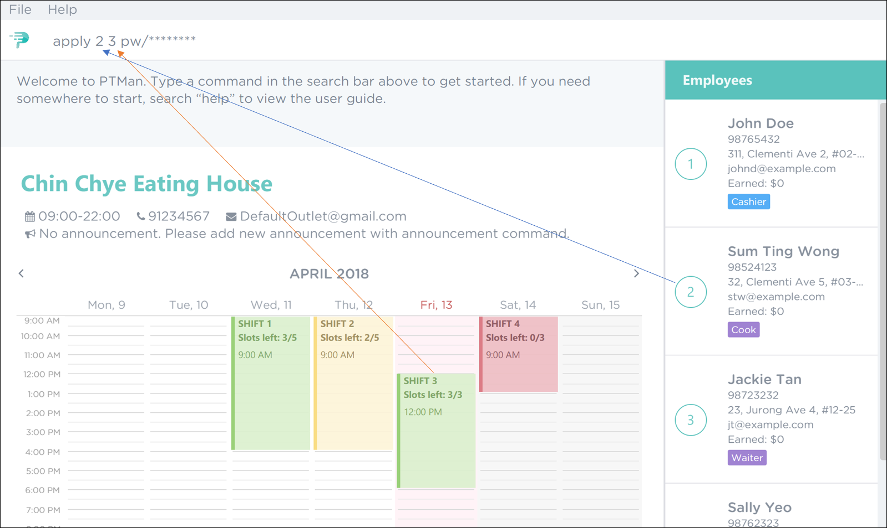
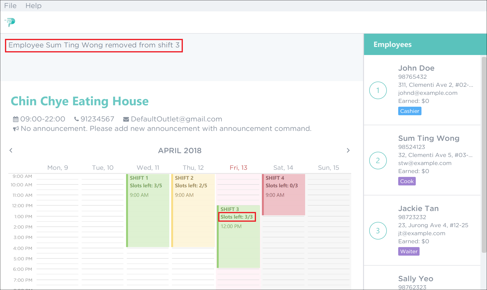

Overview
PTMan is a desktop human resource application used for managing part-time employees.
PTMan aims to give part-time employees the freedom of choosing when they want to work by registering for the available shifts set by the employer.
Thereby reducing the hassle of work scheduling for both employers and employees.
The user interacts with the application using a CLI, and it has a GUI created with JavaFX. It is written in Java, and has about 10 kLoC.
Summary of contributions
-
Major enhancement: Added the shift feature.
-
What it does: Allows employers to create work shifts. Employees can then apply for the shifts that they want to work in.
-
Justification: This feature allows for easy management of manpower while giving employees the freedom and flexibility to work whenever they want to.
-
Highlights: This enhancement modifies the app’s model to store shifts. The storage component also had to be modified to save shifts to local storage. There were design considerations to integrate shifts into the existing model while minimizing coupling with the other components. To enable user interaction with this feature, various commands that manipulate shifts had to be implemented.
-
-
Minor enhancement: Added command aliases that are shorthands for the full commands.
-
Code contributed: [Functional code] [Test code]
-
Other contributions:
-
Project management:
-
Managed milestones and issue-tracking on GitHub.
-
-
Documentation:
-
Tools:
-
Integrated TravisCI to the team repo.
-
Integrated Coveralls to the team repo.
-
Integrated Codacy to the team repo.
-
-
Contributions to the User Guide
Given below are sections I contributed to the User Guide. They showcase my ability to write documentation targeting end-users. |
Adding a shift: addshift
Adds a shift to the timetable to indicate that you require employees at that period.
Format: addshift d/DATE ts/START_TIME te/END_TIME c/EMPLOYEE_CAPACITY
Shorthand: as d/DATE ts/START_TIME te/END_TIME c/EMPLOYEE_CAPACITY
Example:
-
To add a shift on 13th April 2018 from 12pm to 6pm that requires 3 employees, execute the command
addshift d/13-04-18 ts/1200 te/1800 c/3as shown in Figure 1. Figure 1. Adding a Shift
Figure 1. Adding a Shift -
You should see a confirmation message in the feedback box along with the shift you’ve added being displayed in the timetable. This is illustrated in Figure 2.
 Figure 2. Successful Adding of a Shift
Figure 2. Successful Adding of a Shift
Deleting a shift: deleteshift
Deletes a shift from the timetable.
Format: deleteshift SHIFT_INDEX
Shorthand: ds
Guided Example:
-
If you wish to delete shift 1, execute the command
deleteshift 1as shown in Figure 3 below. Figure 3. Deleting Shift 1
Figure 3. Deleting Shift 1 -
Upon successful deletion, you will see a confirmation message in the feedback box and you can no longer see the shift in the timetable. Figure 4 illustrates the successful deletion of shift 1.
Figure 4. Successful Deletion of Shift 1
Applying an employee for a shift: apply
Applies an employee for a shift.
Format: apply EMPLOYEE_INDEX SHIFT_INDEX
Shorthand: ap EMPLOYEE_INDEX SHIFT_INDEX
Guided Example:
-
To apply Sum Ting Wong for shift 3, execute the command
apply 2 3as shown in Figure 5 below. Figure 5. Applying Employee 2 to Shift 3
Figure 5. Applying Employee 2 to Shift 3 -
As highlighted by the red boxes in Figure 6, you should see a confirmation message in the feedback box and the slots left in the shift will decrease by 1 upon successful application.
 Figure 6. Successful Application of Employee 2 to Shift 3
Figure 6. Successful Application of Employee 2 to Shift 3
If you have accidentally applied the employee for the wrong shift, you may use the unapply command.Refer to Removing an employee from a shift: unapply for more information.
|
Removing an employee from a shift: unapply
Removes an employee from a shift.
Format: unapply EMPLOYEE_INDEX SHIFT_INDEX
Shorthand: uap EMPLOYEE_INDEX SHIFT_INDEX
Guided Example:
-
To remove Sum Ting Wong from shift 3, execute the command
unapply 2 3as shown in Figure 7 below.Figure 7. Removing Employee 2 from Shift 3 -
As highlighted by the red boxes in Figure 8, you should see a confirmation message in the feedback box and the slots left in the shift will increase by 1 upon successful removal.
Figure 8. Successful Removal of Employee 2 from Shift 3
Applying for a shift: apply
Applies for a shift.
Format: apply EMPLOYEE_INDEX SHIFT_INDEX pw/PASSWORD
Shorthand: ap
Guided Example:
-
If you are Sum Ting Wong and you wish to apply for shift 3, execute the command
apply 2 3 pw/YOUR_PASSWORDas shown in Figure 9 below.Figure 9. Applying Employee 2 to Shift 3 -
As highlighted by the red boxes in Figure 10, you should see a confirmation message in the feedback box and the slots left in the shift will decrease by 1 upon successful application.
 Figure 10. Successful Application of Employee 2 to Shift 3
Figure 10. Successful Application of Employee 2 to Shift 3
If you have accidentally applied for the wrong shift, you may use the unapply command.Refer to Removing yourself from a shift: unapply for more information.
|
Removing yourself from a shift: unapply
Removes youreself from a shift.
Format: unapply EMPLOYEE_INDEX SHIFT_INDEX pw/PASSWORD
Shorthand: uap EMPLOYEE_INDEX SHIFT_INDEX pw/PASSWORD
Guided Example:
-
If you are Sum Ting Wong and you wish to remove yourself from shift 3, execute the command
unapply 2 3 pw/YOUR_PASSWORDas shown in Figure 11 below. Figure 11. Removing Employee 2 from Shift 3
Figure 11. Removing Employee 2 from Shift 3 -
As highlighted by the red boxes in Figure 12, you should see a confirmation message in the feedback box and the slots left in the shift will increase by 1 upon successful removal.
Figure 12. Excpected Outcome After Applying Employee 2 to Shift 3
Contributions to the Developer Guide
Given below are sections I contributed to the Developer Guide. They showcase my ability to write technical documentation and the technical depth of my contributions to the project. |
Shifts Feature
Reason for implementation
PTMan is designed to give employees the freedom and flexibility to choose the shifts they want to work in. By allowing employers to add or delete shifts, employees can then apply for the shifts that are available.
How it is implemented
The Shift class represents a shift in PTMan.
It stores:
-
The
Dateof the shift.Dateis a class that wraps Java’sLocalDateclass. -
The starting and ending
Timeof the shift.Timeis a class that wraps Java’sLocalTimeclass. -
The employee
Capacityfor the shift.Capacityis a class that wraps an integer. -
The
UniqueEmployeeListof employees working in the shift.UniqueEmployeeListis a list that stores theEmployeeobjects of employees that have applied for the shift. It guarantees there are no duplicate employees in the shift.
Figure 13 is a class diagram that displays the association between Shift and other components in the Model.
Date and Time use Java’s LocalDate and LocalTime classes for easy integration with the timetable.
They also make formatting and parsing simple through the use of Java’s DateTimeFormatter.
To store a list of shifts in PartTimeManager, we use a UniqueShiftList to ensure there are no duplicate shifts.
Commands
The following are commands that directly interact with the Shift class:
-
AddShiftCommand: Creates aShiftand adds it to theUniqueShiftListinPartTimeManager. -
DeleteShiftCommand: Deletes aShiftfrom theUniqueShiftListinPartTimeManager. -
ApplyCommand: Adds anEmployeeto theUniqueEmployeeListin theShift.
To adhere to defensive programming practices, instead of simply adding theEmployeeto theShift,ApplyCommanddoes the following:-
Create a copy of the specified
Shift -
Add the
Employeeto the copy. -
Replace the original
Shiftwith the copy.
-
-
UnapplyCommand: Removes anEmployeefrom theUniqueEmployeeListin theShift.
Similar toApplyCommand,UnapplyCommandwill:-
Create a copy of the specified
Shift. -
Remove the
Employeefrom the copy. -
Replace the original with the copy.
-
Shift indexing
The commands DeleteShiftCommand, ApplyCommand and UnapplyCommand access the specified Shift via it’s index displayed on the timetable.
The preferred behaviour for the indexes is to have the first shift of the week start from index 1, with subsequent shifts incrementing that index.
However, having shifts that are earlier than the current timetable week will cause the first shift of the week to have an index that is greater than 1.
As seen in Figure 14 below, the shift on Monday has index 5 because there are 4 other shifts in the week(s) before the current week.
To avoid this, we only want to index shifts that are visible in the current timetable view.
This can be achieved by setting the Predicate<Shift> for the FilteredList<Shift> in ModelManager to filter shifts in the current week as shown below:
// In Model
public static Predicate<Shift> PREDICATE_SHOW_WEEK_SHIFTS = shift ->
getWeekFromDate(shift.getDate().getLocalDate()) == getWeekFromDate(LocalDate.now());
// In ModelManager
updateFilteredShiftList(PREDICATE_SHOW_WEEK_SHIFTS);
This results in the desired shift indexing as shown in Figure 15 below.